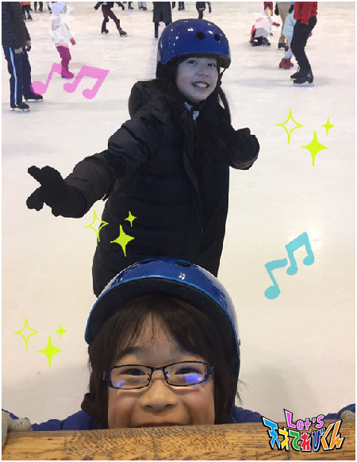
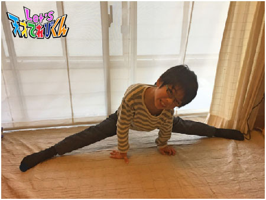
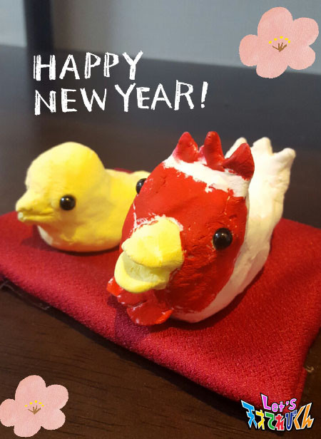
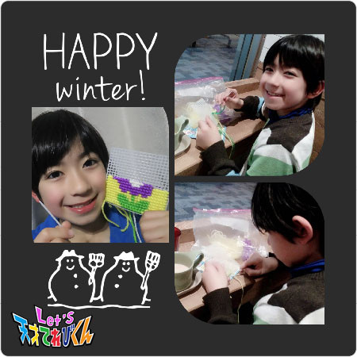

<<2016年12月 | トップページ | 2017年2月>>
2017年1月
私の"ファイト"［瀧澤翼］
こんにちは！
お正月にお餅を食べすぎた瀧澤翼です。
さぁ、今回のテーマは「 私の“ ファイト ”」ですね。
僕の苦手なことといえば数学ですが、
もうひとつ、僕の苦手なことがあります。
それは長距離を走ることです。
そう、僕には体力がない！
体育の時間に持久走やシャトルランをやるときに
ものすごくテンションが落ちてしまいます。
短距離はすごく好きで得意なのですが、
どうしても長時間走るのが苦手で、いい記録が出ません。
と、いうわけで僕のファイトは、「 体力をつける 」です。
走っているときにあきらめてしまおうとする自分がいるので、
それに打ち勝ってどんどん体力をつけていきたいです。
走ると、心もリフレッシュできるので一石二鳥！
愛犬ポッキーの散歩のときも走りたいです。
ファイト一発でがんばるぞ～！
今回はここまで ＼(^o^)／
Let's 体力！！
投稿者:瀧澤翼 | 投稿時間:18時45分 | カテゴリ：てれび戦士 | 固定リンク
私の"ファイト"［黒川桃花］
皆さんこんにちは。黒川桃花です。
毎日寒いですね。寒さになんか負けないぞ！！！
さて、今回のお題は「 私の“ ファイト ”」です。
私は今年４月から、いよいよ中学生なります！！
中学校生活、、、
未知の世界です、、、(@_@)
中学校ではまず、勉強をがんばりたいです (^^)v
そして、楽しみなのが部活です！！
小学校では、音楽クラブとボール運動クラブに入っていましたが、
中学校のクラブは、すごく本格的なイメージがあります。
今はひとつ候補があるので、
入学したらいろいろ見学してみて、決めたいと思います。
新しいことを始めるのって、なんだかワクワクするなぁ(^^)
小学校とはまったく違う新しい世界に飛び込んでいく、
「 中学生になる自分 」ファイト！！！！ ＼(^o^)／

投稿者:黒川桃花 | 投稿時間:18時45分 | カテゴリ：てれび戦士 | 固定リンク
私の"ファイト"［飯島緋梨］
こんにちは
飯島緋梨です！
最近、寒くて寒くて、
寝る前のふとん乾燥機が欠かせません（ 笑 ）
私の家の寝室が２階にあるのですが、
１階の暖かい部屋から寒くて冷たい廊下と階段をあがって冷えきったあとに、
ふとん乾燥機で暖かくなったベッドに入ったときの幸せは計り知れません（ 笑 ）
さてさて今回のお題は
「 私の“ ファイト ”」です！
私のファイトは、スキーを上達させることです (^^)
学校でスキー教室がありました！
スキーは小さい頃に行ったことがあるらしいのですが、
私はまったく覚えていません。
そんな私でもスキーがすべれたらかっこいいな～と思って
はりきって練習しました。
最初は転ぶことが怖かったけど
転ぶコツがわかったら怖くなかった！
大丈夫でした (^^)
寒いと思っていたスキーも
夢中になったら暑くてスキーウェアを脱ぎたいぐらいでした (^^)
スキー教室は楽しくて楽しくて
２泊３日では、あっという間に時間が過ぎてしまいました (^o^)
もっと上手くすべれるようになったら、
てれび戦士のみんなとも行ってみたいな～♪
投稿者:飯島緋梨 | 投稿時間:18時45分 | カテゴリ：てれび戦士 | 固定リンク
私の"ファイト"［辻晴仁］
こんにちは～
寒いの大すき♪ つじはるとでーす (*^◯^*)
冬休みは、愛知のおじいちゃんとおばあちゃんの家に
遊びに行って来ました♪
畑で大根をぬいたり、
引越した幼なじみと久しぶりに会えたり、
メダカとりは小川が凍っちゃっててむりだったけど、、
いろいろとまんきつしてきましたよ～～♪
そして、みのりとスケートに行ってきました！
パワフルなぼくたちは、
４時間ぐらいすべりまくったあと、
しばふの公園で全力鬼ごっこもしました。
いっしょに遊んだお父さんは
そのあとつかれてひっくり返っていたけど、
ぼくたちはぜんぜん平気 v(^-^)v
すっごく楽しかったな～～

さて、今回のテーマは、
「 私の“ ファイト ”」！！
じつはぼくは今、
カラダをめっちゃやわらかくするぞ～～！
ファイト！オー！！
って、がんばっているところなんです。
ぼくは、長年、じゅうなんが大嫌いでした。
だって、生まれつきカラダがかたいから、
120度くらい足を広げただけで、
すごく痛いんですよ！(≧◇≦)！
じゅうなんの痛みはいい痛みなんだよ、とか、
そのうち痛きもちよくなってくるから
続けてごらん、とか言ってはげまされるけど、
痛いものは痛いし、
だいたい、毎日毎日忘れずにやるとかも
めんどくさい。。
でも聞いたんです。
カラダがやわらかくなると、
手足とかが大きく動くようになって
スポーツも上達するし、
足も速くなるんだって！
ぼくは足が速くなりたい！！
一念発起（ いちねんほっき ）しました！
エイ！ヤー！ファイト～！
カラダをやわらかくするぞ～～
目標は、足を180度開いて、
胸をべったり床に付けられるようになること☆

今はこんな感じでまだまだだけど、
絶対に達成してやるぞ ( ｀―´)ノ
期限は３月末！
それまでに絶対にやわらかく！俺はなるっ！
だから楽しみにしててね (^o-)～☆
では、またね！！
投稿者:辻晴仁 | 投稿時間:18時54分 | カテゴリ：てれび戦士 | 固定リンク
冬のお楽しみ［胡内奏芽］
こんにちは！
胡内です。
2017年！！
新年を無事に迎えることができて、本当にうれしいです！！
今年の目標は、冷静になること！！！
テストで、勉強したのに思い出せないー！ってときも冷静に。
友達が困っていたら、落ち着いてアドバイスができるように！
とにかく、焦らずに考えたり行動したりしたいです。
今年もどうぞよろしくお願いします(^-^)/
さて、今回のテーマは「 冬のお楽しみ 」です。
ぼくの冬のお楽しみは、ズバリ！これ。

毎年、クリスマスが終わると
次の年の干支を紙粘土で作るのがとても楽しみなんです (*^^*)
今年はとり年！
ニワトリとヒヨコ（ 卵もあるよ ）にしました。
玄関に飾るので、いつも以上に気合いを入れて作ります。
今回はニワトリの形を決めるのに少し時間がかかってしまったけど、
出来上がりは気に入っています！！！
粘土って本当に楽しいーー (*^^*)
それでは！！！
レーーッツ！！！！
投稿者:胡内奏芽 | 投稿時間:18時45分 | カテゴリ：てれび戦士 | 固定リンク
冬のお楽しみ［桐畑カレン］
あけましておめでとうございます。
カレンです (*^^*)
寒い冬は暖かい家の中で、ぬくぬく ( ´∀｀)
最近とってもかわいいうさぎのモコモコガウンを買ってもらったから、
それを着てごろごろしてます♪
ごろごろ～ごろごろ～
ごろごろしか動いてないのに、お腹はすく(￣▽￣;)
だから、大好きなチョコレートを食べて、
またごろごろ～ごろごろ～。
チョコレートって冬になると特別おいしそうにみえるし、
おいしくないですか？？
ごろごろしてるのに食べてばかりだから、冬になると必ず、
『 ちょっとぽってりしてる 』
ものに似てるねと言われます。
去年は【 どちゃもん じゅにあ 】の「 ぽてばたほくほく 」
だったかな ^_^;
一昨年はたしか
「 かがみもち 」
でした^_^;
この似てるねシリーズ、ぽわわわーんって想像してみると、
結構似てるなと納得できて面白いんです。
さて、今年の冬は、なにに似てると言われるのかな～。
楽しみです (*´∀`)♪
投稿者:桐畑カレン | 投稿時間:18時45分 | カテゴリ：てれび戦士 | 固定リンク
冬のお楽しみ［柿澤仁誠］
こんにちは (^^)/ にまです。
今年もよろしくお願いします！
ぼくの冬の楽しみは、今年はやっぱりスケートです！
スケートをしてると寒さは感じなくなります。
あんなに寒いのにふしぎです！
あと、最近ハマっているのがししゅうです！
スケートもいいけど、あたたかいところでやる
ししゅうも楽しいです！
こたつでも、お出かけのときも、
時間があればどこでもやっています。
完せいが楽しみだな～

投稿者:柿澤仁誠 | 投稿時間:18時45分 | カテゴリ：てれび戦士 | 固定リンク
冬のお楽しみ［瀧澤翼］
Happy New Year *\(^o^)/*
今年もよろしくお願いします！
年が明けるとなぜかテンションが上がってしまう瀧澤翼です。
とうとう2017年がやってきました！
さぁ、今回のテーマは、「 冬のお楽しみ 」ですね。
冬のお楽しみといえば、
雪が降れば雪合戦や雪だるまを作ったりします！
ただ僕の住んでるところは海の近くなので雪がなかなか降らないんです。
でも僕はもうひとつ楽しみにしてることがあります。
それは冬の食べもの。
まず定番といえば、鍋ですよね！
お肉や野菜がいっぱい入ってる鍋やキムチ鍋などを
この季節に食べるのがたまらないなぁ～。
次にお雑煮！
僕の家族では正月にお父さん特製のお雑煮を毎年食べてます。
今年のお雑煮もおいしかった～ )^o^(
体の芯から温まる食べものも、冬の楽しみのひとつですよね。
今回は、ここまで！
今年もよろしくお願いしまーす！
Let's あけおめ！
投稿者:瀧澤翼 | 投稿時間:18時45分 | カテゴリ：てれび戦士 | 固定リンク
冬のお楽しみ［黒川桃花］
みなさんこんにちは。黒川桃花です。
毎日寒いですね！
同い年の仲良し、皆川ねねちゃんとの２ショットです！！！
さて、
今回のテーマは「 冬のお楽しみ 」です。
寒い冬はやっぱり、鍋ですね！
私の好きな鍋はきりたんぽ鍋です(^.^)
柔らかくもちっとなったきりたんぽを、フーフーしながら食べると幸せになります。
あとは、白菜と豚肉を重ねてくるくるまく、ミルフィーユ鍋も大好きです！！
冬は寒いけど、おいしいものがたくさんなので楽しいですね(^.^)
それと、
すご－く大きくてふわふわの犬を飼って、
寒い夜に一緒にくっついて寝たいなぁ！という夢があります。
いつか叶うといいな (^^♪
では！
投稿者:黒川桃花 | 投稿時間:18時54分 | カテゴリ：てれび戦士 | 固定リンク
冬のお楽しみ［林武尊］
林武尊です！
みなさん、明けましておめでとうございます！
今年もみなさんにとって、良い年でありますように！
ということで、神社に行ってきました！
前は初詣のときしか行ったことなかったけど、
実は最近、普通のお休みの日にもよく行ってるんです (⌒▽⌒)
いいですよ～♪
神社行くたびに、心が清められるような気がして、
とっても気持ちがいいんです（＾_＾）
皆さんも朝がんばって早起きして、行ってみてください！
晴れた日の朝がおすすめです！
それでは“ 冬のお楽しみ ”です！
僕の冬の楽しみはー
おばあちゃんの家のこたつに入りながらみかん食べて、
紅白歌合戦などのテレビを見ることです！
他にも、すき焼きを食べてお雑煮食べてお餅食べて年越しそば食べて
って食べてばっか (￣∇￣)
家で寝るときは湯たんぽを入れて
朝起きたらいつの間にか抱いててビックリΣ(゜Д゜)
あと、スキー場に行くこと！
いつもはスキーをしてるけど今回はスノーボードをやってみようと思います。
それから、温泉も楽しみ。
雪の中の露天風呂とか、最高（≧∇≦）
冬は寒いけど、楽しいことがいっぱいあって大好きです！
また家に帰ったらこたつにこもっちゃうなー
それじゃあ、また～
投稿者:林武尊 | 投稿時間:18時45分 | カテゴリ：てれび戦士 | 固定リンク
冬のお楽しみ［稲垣芽生］
新年です。
みなさま、今年もよろしくお願いします。
年末、黒川ももかちゃんの音楽コンサートをみてきました。
遠い存在で大きくて素晴らしい ももかちゃん。
がんばっている姿に、元気とやる気をたくさんもらいました。
ももかちゃん。
ありがとう。
今回のテーマは【 冬のお楽しみ 】です。
冬と言えば・・・みんなのお家にもあるかな (*^^*)
私の大好きなコタツ！！！
冬といえばコタツ！！！
テーブルの上にはミカンが必ず乗っています。
コタツでぬくぬくして
ミカンを食べたり本を読んだり
おそばを食べたり・・・
寒～い冬の日もコタツがあれば
心もあったかです。
家族４人で囲んで
足でちょっかいをだしあったり
かるたやトランプをするのも楽しい。
でも、寒い冬の外のキーンっていう空気も好き。
う～寒いね～って笑っちゃう。
この寒いのを過ぎたら
もうすぐ私の誕生日。って思えるから好き。
みなさんの冬のお楽しみも聞きたいです。
そうしたら一層冬が楽しくなりそう！
投稿者:稲垣芽生 | 投稿時間:18時45分 | カテゴリ：てれび戦士 | 固定リンク
冬のお楽しみ［飯島緋梨］
飯島緋梨です
あけましておめでとうございます！
今年もよろしくお願いします！！
2017年、新しい年のはじまりです
今年の春からは中学２年生！
もうすぐ受験生だ～
さてさて！
今回のお題は「 冬のお楽しみ 」です！
私の学校では毎年、地域交流会で餅つきをします！！
中学生で初めての地域交流会では、
なんと小学生の誘導をする誘導係に任命されました！！
中学２年生、中学３年生の先輩たちを見習って
小学生の子たちを一生懸命誘導して、
みんなが楽しくお餅を食べられるようにしたいです！
私の学校の餅には定番の味が２種類！
きな粉とあんこがあります！！
私はどっちも大好きだけど・・・
どちらかといえばきな粉派かな？
皆さんはきな粉派？あんこ派？？
どっちの方が好きですか？？
あ、どっちも混ぜちゃう？！笑
こんな話をしながら、みんなでお餅を食べるのが楽しい (^^)
皆さんの冬のお楽しみはなんですか？？
Let's 冬のお楽しみ！
投稿者:飯島緋梨 | 投稿時間:18時45分 | カテゴリ：てれび戦士 | 固定リンク
冬のお楽しみ［皆川寧々］
みっなさ～ん、
こんばんは、＊寧々＊です(｡・u・｡)/☆
去年のクリスマスイブは
黒川桃花ちゃんのクリスマスコンサートに行ってきました。
ステージの上でスポットライトを浴びる
桃ちゃんの澄み切った歌声と華麗（ かれい ）なダンスにうっとりし、
兵庫どちゃもん・おくとぱすみれと桃ちゃんが重なり、
ますます桃ちゃんのことが
大好きになってしまいました！
さてさて本題へ今日のテーマは、
『 冬のお楽しみ 』
冬にもなるとバスケの帰りはもう真っ暗で、
空を見上げるとアレがものすごく綺麗なんです！！！！
それは、月と星です！
冬空をみることが冬のお楽しみです！
冬の夜空は空気が澄んでいて、
月も星もとても綺麗に見えるんです。
この前、理科の時間に月のことを習ってから、
月の出ている日は月がどんな形をしているかを見るのが密かな楽しみです。
新月、三日月、上弦の月、下弦の月、満月・・・
（ 小さいときは満月、三日月、半月の３つしか月の名前を知りませんでした。 ）
くもっている日以外でも、月が見えない新月という日があることを初めて知りました。
去年の11月と12月の満月は、月と地球の距離が近くてとっても大きく見えました。
肉眼では綺麗に見えても、なかなか写真ではうまく撮ることができないので、
何かいい方法があれば教えてください(*・u・*)／
冬は寒い日が続くのでプラネタリウムに行くのも楽しいですよね！
みんなの冬のお楽しみたくさん知りたいです！
それでは＊寧々＊でした♪
投稿者:皆川寧々 | 投稿時間:18時45分 | カテゴリ：てれび戦士 | 固定リンク
冬のお楽しみ［原田明莉］
みなさんこんにちは！
新年あけましておめでとうございます。
今年もよろしくおねがいします。
もう2017年なんですねぇー
は、早くないですか！？
去年、2014か2015だった気がするんだけどなぁ～
ま！とりあえず！
2017も幸せいっぱいの一年にしましょう！！！
ではでは本題に入ります！
今回のテーマは
「 冬のお楽しみ 」
です！
前の記事で年末のお楽しみ言っちゃったからなーーー
んーーー。
あ！！
やっぱりサンタさんが来ることかなーーー
去年はサンタさんに持ち運び用充電器をもらいました！
母からは上下のスウェット！
弟と
サンタさんって体が大きそうだから、いくら食べてもお腹空いちゃうのかなー
とかいう話を夜してました！
なのでお手紙の隣にみかんを置いて寝ました！
すると！！朝起きたら！
こうなっていたんです！
サンタさんが食べていっちゃったのかも！？！？！？
こんなことがあったり・・・
とっても楽しいクリスマスでした！
私の冬のお楽しみはサンタさんが来ることです！
みなさんの冬のお楽しみはなんですかーーー？
投稿者:原田明莉 | 投稿時間:18時54分 | カテゴリ：てれび戦士 | 固定リンク
冬のお楽しみ［辻晴仁］
あけましておめでとうございます！
今年も元気 いっぱい！
つじはるとです ＼(^o^)／よろしくね。
ここで速報！なんとなんとなんと～～
わが家の家族に、新しい仲間、
ニジイロクワガタちゃんが加わりました♪
イェーイヒューヒューヒュー！！！
すみません、うれしくて盛り上がり
すぎました。。

このニジイロクワガタちゃん、
すぐにひっくり返ったり、
エサのゼリーを土にうめて
ドロドロにしてしまったり、、、
ほんとに手間のかかる子なんです。
でも、そんなとこが
よけいにかわいいんですよ (*^^*)
・・・・・・・・・・・・・・・・・・・
さて、今回のテーマは、
「 冬のお楽しみ 」です。
冬のお楽しみといえばやっぱり、
「 こたつとみかん！ 」
これで決まりです！
以前のブログで、
雪の中で犬みたいにかけ回るぼくを
紹介したのですが、
じつは、ぼくは、あったか～いこたつの中で
ねこみたいにまんまるくなるのも
大好きなんです。
学校から帰ってきて、
真っ先にぽかぽかのこたつに飛びこんで、
つめた～いみかんを食べる！
ああ、幸せ～～ (*´▽｀*)
気づくと、よだれたらしてねちゃってたりするんだよね。
投稿者:黒川桃花 | 投稿時間:18時45分 | カテゴリ：てれび戦士 | 固定リンク
冬のお楽しみ［小澤竜心］
こんにちは！竜心です。
2017年 ＼(*^▽^*)／
今年もよろしくお願いいたします。
ぼくの『 冬のお楽しみ 』は、いろいろありますが、
ひとつめは『 冷たい空気 』です ☆
冬の空気は冷たくて、ツンとします。
ぼくはこの、ツンってくる感じが好きなんです。
あと、なつかしいです。
ぼくは冬に秋田で生まれたので、
だから、なつかしいって思うのかな。
秋田では寝る前に外に出て、
冷たい空気をいっぱい吸います。
山や木の香りがしていてとってもおいしくて、
気持ちが落ち着きます d=(^o^)=b
そのときに見る『 星 』も楽しみです ☆
冬は空気が澄んでいるから、
星がよく見えるって教えてもらいました。
あと、寒いときに、
『 全速力で遊ぶこと 』も大好きです ☆
年末は、サッカーの練習試合がありました。
ぼくは得点できませんでしたが、
みんなで声を出して試合ができてうれしかったです！
とても良い勉強になりました d(⌒ー⌒)!
もうすぐ、また試合があるんです。
小学校でサッカーをするのは残り少ないので、
悔いのないように楽しみ、
そして一所懸命がんばります ((o(^∇^)o))
冬もたくさん動いて、強い体をつくるぞー！！
投稿者:小澤竜心 | 投稿時間:18時45分 | カテゴリ：てれび戦士 | 固定リンク
冬のお楽しみ［久保みのり］
こんにちは ( ´ ▽ ` )ノ
みのりです！！
みなさん。
あけましておめでとうございます。
今年もよろしくおねがいします。
もう去年の出来事になっちゃったけど、、
兵庫どちゃもん・おくとぱすみれちゃんをいっしょに助けてくれて、
ありがとうございました (^O^)
大阪で決戦の前には、てれび戦士のみんなと
お好み焼きを食べて力をつけました～！！
＊.｡.:*・ﾟ ＊.｡.:*・ﾟ ＊.｡.:*・ﾟ ＊.｡.:*・ﾟ ＊.｡.:
今回のテーマは『 冬のお楽しみ 』
冬休みになると、クリスマスにお正月がすぐにやってきます。
クリスマスプレゼントにお年玉。それから、
ごちそうがたくさん食べられる毎日です ☆
うーーん。しあわせ (^O^)
クリスマスはケーキにチキンにカラフルサラダ。
サラダは、私がたんとうして作りました^ ^
お正月はおせち料理とおぞうに。どっちも大好き！
ここで、おせち料理好きなものベスト３を発表します笑
第３位は、いろいろ根菜のにしめ！
第２位は、黒豆！！
そして
第１位は
紅白なます！！！
どれもみーんなおいしくて、お正月の朝はたくさん食べられます ^ ^
お母さんが作ったおせち料理を食べながら
のーーーんびりすごすお正月が私の冬のお楽しみです ^ ^
おなかを休めるために
１月７日の朝には七草かゆを食べるのもきまりです。
あったかいんだからぁ ♪♪♪
新しい年の始まりは、気持ちもひきしまります。
私をささえてくれるすべての人にかんしゃを忘れずに、
2017年もどんなことにも一生けんめいがんばります！！！
投稿者:久保みのり | 投稿時間:18時45分 | カテゴリ：てれび戦士 | 固定リンク
ページの一番上へ▲